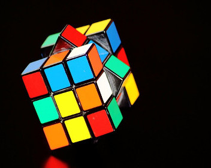
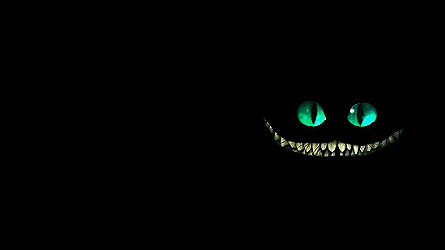
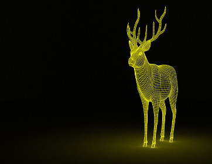

Brashilo
Bom, não tenho muito o que falar apenas sou um cara retardado, depressivo, desorganizado e nerd. Gosto muito de programação(eu fiz o site), logo, vou dominar o tópico de programação e de tutoriais, entretanto irei postar também nos Dias e nas Coisas Aleatórias, mas, com menos frequência. Sou um pouco antissocial o que me leva a pensar em várias coisas nos momentos em que estou sozinho e isso me distância das pessoas, mas, em contraponto, quando estou com meus amigos é como se isso não existisse. Gosto demais de Matemática, mas, isso não quer dizer que eu manjo, apenas gosto muito. Meu estilo musical é algo bem diversificado, então, basicamente, ouço tudo, menos funk. Minha banda preferida é com toda certeza Engenheiros Do Hawaii, também ouço bastante Legião Urbana. Bom, enfim, espero que acompanhem o site e inclusive o desenvolvimento do mesmo, o layout, tudo e por último espero que gostem do meu conteúdo. Abraços.
Topem
Às vezes falar sobre mim mesma se torna um pouco complicado, não sei o que os outros vão pensar, drama ou algo parecido, mas é tipo, uma felicidade duradoura/passageira, mesmo que dure bastante tempo, quando converso com certa pessoa, que querendo ou não consegue me tirar sorrisos por mensagem, porém na noite, eu começo a pensar nas merdas que faço ou fiz na vida, às vezes choro até cair no sono. Rotina essa minha bipolaridade? Sim, mas é como algo estranho que a gente se acostuma, entende? Uma pessoa q vive feliz na sua bipolaridade. Personalidade? O humor e carisma hehe...
lElaPhodusy
Um garoto, não muito interessante, mas faz de tudo pra deixar seus amigos felizes, demonstra seus sentimentos de uma forma expressiva, tenta animar as pessoas a sua volta, esconde seus problemas das pessoas em volta pra não causar transtornos, gosta de treinar artes marciais, gosta de músicas antigas que façam esquecer dos seus problemas.
